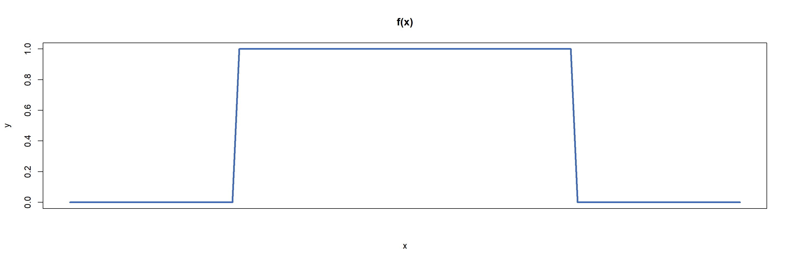

PMFs, PDFs and CDFs
SUMMARY
Probability mass functions (PMFs), probability density functions (PDFs), and cumulative distribution functions (CDFs) are fundamental concepts in statistics. These functions describe how probabilities are distributed across the possible outcomes of random events. These functions are commonly used to model probability distributions, helping to visualize and understand the behavior of random processes. This guide will explore the role of each function, how they differ, and highlight their applications.
Before reading this guide, it is highly recommended that you read (Guide: Introduction to probability) and (Fact Sheet: Discrete random variables versus continuous random variables).
What is a probability mass function (PMF)?
As you have seen in (Fact Sheet: Discrete random variables versus continuous random variables), a discrete random variable can take on a countable number of distinct outcomes. For example, rolling a dice can result in only one of six possible outcomes. A probability mass function (PMF) assigns probabilities to each individual outcome of a discrete random variable, helping to determine the likelihood of a specific event occurring. In the case of the six-sided dice, the PMF assigns a probability of 1/6 to each outcome, reflecting that each outcome is equally as likely. When applied to the entire discrete random variable, a PMF describes how the total probability is distributed across all possible outcomes.
Definition of a PMF
A probability mass function or PMF is a function that, when applied to a discrete random variable \(X\), returns the probability that \(X\) is equal to a specific value \(x\). The PMF, \(p(x)\), can be expressed as:
\[ p(x) = P(X = x) \]
Where \(P(X = x)\) is the probability that \(X\) equals \(x\).
For a PMF to be considered a valid probability distribution for a random variable, it must satisfy two main conditions:
Non-negativity: The probability assigned to each possible outcome must be greater than or equal to zero:
\(p(x) = P(X = x) ≥ 0\) for all values of \(x\)
Honesty condition: The sum of probabilities of all possible outcomes of \(X\) must be equal to one: \[\sum_{x} p(x) = \sum_{x} P(X = x) = 1\]
Note: These conditions are derived from the laws of probability. For more, see (Guide: Introduction to probability).
Example 1
Consider a fair six-sided dice. Let the discrete random variable \(X\) represent the result of rolling the dice, and \(x\) represent the possible outcomes: 1, 2, 3, 4, 5, and 6. Since the dice is fair, each outcome has an equal probability of 1/6, so the PMF, p(x), for this scenario is given by:
\[p(x)\]
| \(x\) | 1 | 2 | 3 | 4 | 5 | 6 |
|---|---|---|---|---|---|---|
| \(P(X = x)\) | \(\dfrac{1}{6}\) | \(\dfrac{1}{6}\) | \(\dfrac{1}{6}\) | \(\dfrac{1}{6}\) | \(\dfrac{1}{6}\) | \(\dfrac{1}{6}\) |
All \(P(X = x) = \dfrac{1}{6} \geq 0\), so each probability is positive, following the non-negativity requirement.
\(\sum_{x} P(X = x) = \dfrac{1}{6} + \dfrac{1}{6} + \dfrac{1}{6} + \dfrac{1}{6} + \dfrac{1}{6} + \dfrac{1}{6} = 1\), confirming that the total probability of the PMF equals 1, meeting the honesty condition.
Since the PMF satisfies both the non-negativity and honesty conditions, it is a valid PMF representing the scenario of rolling a fair six-sided die.
Example 2
Consider a fair coin flipped twice. Let the discrete random variable \(X\) represent the number of times the coin lands on heads. The PMF, \(p(x)\), for this scenario is:
\[p(x)\]
| \(x\) | 0 | 1 | 2 |
|---|---|---|---|
| \(P(X = x)\) | 0.25 | 0.5 | 0.25 |
Here, \(x\) represents the possible outcomes: 0, 1, or 2 heads
It can be seen that this PMF also satisfies both key conditions:
All probabilities are positive, as \(P(X = x) \geq 0\) for all values of \(x\)
The sum of probabilities equals 1: \[\sum_{x} P(X = x) = 0.25 + 0.5 + 0.25 = 1\] Thus, this is a valid PMF representing the number of heads when flipping a fair coin twice.
Example 3
A common example of a PMF is that of the binomial distribution. This is a type of PMF used to model scenarios with only two possible outcomes: a success or a failure. The PMF for a binomial distribution is given by: \[
p(x) = \binom{n}{x} p^x q^{(n-x)} = \frac{n!}{(n-x)! x!} p^x q^{(n-x)}
\] Where \(x\) is the number of successes in n number of trials, \(p\) is the probability of success on a single trial and \(q\) is the probability of failure on a single trial \((1- p)\).
Binomial distributions are often used to model real life scenarios, such as the probability of heads occurring in multiple fair coin flips. In this example, heads will be considered a success and tails, a failure. If a coin is flipped 10 times, with a probability of success of 0.5, the figure below visualizes the probability distribution of the number of heads:
You will find that all binomial distributions are valid PMFs.
What is a probability density function (PDF)?
Unlike discrete random variables, continuous random variables can take on any number of values within a range. For instance, a person’s height could be 170cm, 170.1cm or 17.000001cm. Since these values are uncountable, calculating the probability distribution for continuous random variables requires the use of a probability density function (PDF). Unlike PMFs, PDFs assign probabilities to intervals rather than to specific values and so, are key for determining the likelihood of a random variable falling within a given range.
When applied over all possible values of a continuous random variable, the PDF is represented as a curve that illustrates the total probability distribution across all possible outcomes. The probability that \(X\) lies within an interval \([a,b]\) is equal to the area under the curve of \(f(x)\) between \(a\) and \(b\) as shown below:

Definition of a PDF
A probability density function or PDF, is a function that when applied to a continuous random variable X, returns the probability that \(X\) falls within a particular range of values. The PDF, \(f(x)\), is used as such to find the probability of \(X\) occurring in an interval \([a,b]\): \[P(a≤X≤b)= \int_{a}^{b} f(x) \, dx \] Where \(P(a≤X≤b)\) is the probability that \(X\) lies between a and b \((a<b)\).
Just like PMFs, PDFs must satisfy the two main conditions to be considered valid:
Non-negativity: The PDF must be greater than or equal to zero over its entire range of possible values:
\(f(x)≥0\) for all values of \(x\)
Honesty condition: The area under the entire curve of the PDF, \(f(x)\), must equal 1: \[\int_{-\infty}^{\infty} f(x) \, dx = 1\]
Warning
PDFs cannot return probabilities at distinct values. With continuous random variables, there are infinite possible outcomes and as a result, the probability at any specific point is essentially zero. This is because the area under the curve at a single point is always zero! This is why probabilities for continuous random variables are always calculated over intervals and not at individual values.
Example 4
Let \(X\) be a continuous random variable uniformly distributed between 0 and 1. The probability density function (PDF) for \(X\) is given by: \[f(x) =\begin{cases} 1 & \text{if } 0 \leq x \leq 1 \\0 & \text{otherwise} \end{cases}\]

To check if this is a valid PDF, you need to confirm that it satisfies the two key conditions:
\(f(x) \geq 0\) for all values of \(x\), as \(f(x) = 0\) in \([0,1]\) and 0 otherwise
The integral of the function \(f(x)\) represents the area under the curve:
\[\int_{-\infty}^{\infty} f(x) \, dx = \int_{-\infty}^{0} 0 \, dx + \int_{0}^{1} 1 \, dx + \int_{1}^{\infty} 0 \, dx = \big[\,x\,\big]_{0}^{1} = 1\]
And this satisfies the honesty condition, confirming that it is a valid PDF and upon further investigation it can be seen that all uniform distributions are valid PDFs.
To find the probability that \(X\) lies between 0.25 and 0.5, calculate the area under the curve of the PDF within the interval: \[\int_{0.25}^{0.5} f(x) \, dx = \int_{0.25}^{0.5} 1 \, dx = \big[\,x\,\big]_{0.25}^{0.5} = 0.5 - 0.25 = 0.25\] Therefore, the probability that \(X\) lies in the interval \([0.25,0.5]\) is 0.25.
Example 5
The normal distribution is a widely used example of a probability density function (PDF). It is often employed to model naturally occurring phenomena such as height, weight, and other biological measurements. The general PDF of the normal distribution is given by: \[f(x) = \frac{1}{\sigma \sqrt{2\pi}} \exp\left({-\frac{1}{2} \left( \frac{x - \mu}{\sigma} \right)^2}\right)\] Where \(\sigma\) is the standard deviation and \(\mu\) is the mean.
The standard normal distribution with a mean of 0 and a standard deviation of 1, is shown below:

You will find that normal distributions share a similar shape, with the peak centered at the mean, and that all normal distributions are considered valid PDFs.
Key differences between PMFs and PDFs
| Probability Mass Function (PMF) | Probability Density Function (PDF) |
|---|---|
| Finds the probabilities of discrete random variables | Finds the probabilities of continuous random variables |
| Probabilities range from 0 to 1 for each exact outcome | Probabilities are calculated over intervals as the probability of an exact outcome is always 0. |
| Provides likelihood that \(X\) occurs at an exact value | Provides likelihood that \(X\) lies within an interval |
| Sum of probabilities equals 1 | Integral over entire domain equals 1 |
What is a cumulative distribution function (CDF)?
Another important function in the area of probability distributions is the Cumulative Distribution Function (CDF). A CDF returns the probability that a random variable X is less than or equal to a specific value x. CDFs can be derived from both Probability Mass Functions (PMFs) for discrete random variables and Probability Density Functions (PDFs) for continuous random variables.
Definition of a CDF
A cumulative distribution function or CDF, is a function that returns the probability that \(X\) is less than or equal to a variable \(x\).
For a discrete random variable with a PMF, \(f(x)\), the CDF, \(F(x)\), is: \[F(x) = P(X \leq x) = \sum_{y \leq x} f(y)\]
For a continuous random variable with a PDF, \(f(x)\), the CDF, \(F(x)\), is: \[F(x) = P(X \leq x) = \int_{-\infty}^{x} f(y) \, dy\]
Where \(y\) are the outcomes “less than or equal to” \(x\).
Example 6
Consider a fair six-sided die, as in Example 1. Since this scenario involves a PMF, the cumulative distribution function (CDF) can be derived using the following method. To find the probability of rolling a three or lower, sum the probabilities of rolling each number less than or equal to three: \[F(3) = P(X \leq 3) = \sum_{x \leq 3} f(x) = \frac{1}{6} + \frac{1}{6} + \frac{1}{6} = \frac{3}{6} = \frac{1}{2}\]
Therefore, the probability of rolling a three or lower is 50%.
Upon further calculation, the entire CDF, \(F(x)\), is:
\[F(x)\]
| \(x\) | 1 | 2 | 3 | 4 | 5 | 6 |
|---|---|---|---|---|---|---|
| \(P(X \leq x)\) | \(\dfrac{1}{6}\) | \(\dfrac{1}{3}\) | \(\dfrac{1}{2}\) | \(\dfrac{2}{3}\) | \(\dfrac{5}{6}\) | 1 |
Example 7
Consider a fair coin flipped twice, as shown in Example 2. Since this scenario uses a PMF, the CDF, \(F(x)\) can be derived similarly to the previous example:
\[F(x)\]
| \(x\) | 0 | 1 | 2 |
|---|---|---|---|
| \(P(X \leq x)\) | 0.25 | 0.75 | 1 |
To find the probability that \(X\) is greater than \(x\), subtract the correlating value in the CDF from the total probability.
For example, to find the probability that \(X\) is greater than 1: \[P(X > 1) = 1 - F(1) = 1 - P(X \leq 1) = 1 - 0.75 = 0.25\]
Therefore, the probability that \(X\) is greater than 1 is 0.25.
Example 8
Consider a continuous random variable \(X\) uniformly distributed between 0 and 1, as seen in Example 4. The PDF of \(X\) is given by:
\[f(x) =\begin{cases}1 & \text{if } 0 \leq x \leq 1 \\0 & \text{otherwise} \end{cases}\]
To find the probability that \(X\) is less than or equal to 0.5, use the formula from the definition of the CDF:
\[F(0.5) = P(X \leq 0.5) = \int_{-\infty}^{0.5} f(x) \, dx = 0.5\]
Meaning the probability of \(X\) being less than or equal to 0.5 is 50%.
On the other hand, to find the probability that \(X\) is greater than 0.5, subtract the CDF value at 0.5 from the total probability, 1: \[P(X>0.5) = 1 − F(0.5) = 1 − 0.5 = 0.5\] Thus, the probability that \(X\) is greater than 0.5 is also 50%.
Quick check problems
- True or False:
- PMFs are used for discrete random variables: TRUE/FALSE
- PDFs assign probabilities to individual outcomes: TRUE/FALSE
- The CDF can descrease as the random variable increases: TRUE/FALSE
- A fair 4-sided die is rolled:
- What type of probability distribution function would you use for this scenario? Answer: PMF/PDF/CDF
- What is the probability of rolling a 4?
Answer: - What is the cumulative probability of rolling a number less than or equal to a 2?
Answer: - What is the probability of rolling an even number? Answer:
- A continuous random variable \(X\) is uniformly distributed on \([0,4]\):
- What is the probability distribution function would you use for this scenario? Answer: PMF/PDF/CDF
- What is the value of \(f(x)\) over the interval \([0, 4]\)?
Answer: - What is \(P(1 \leq X \leq 3)\)?
Answer: - What is the cumulative probability \(P(X \leq 2)\)?
Answer: